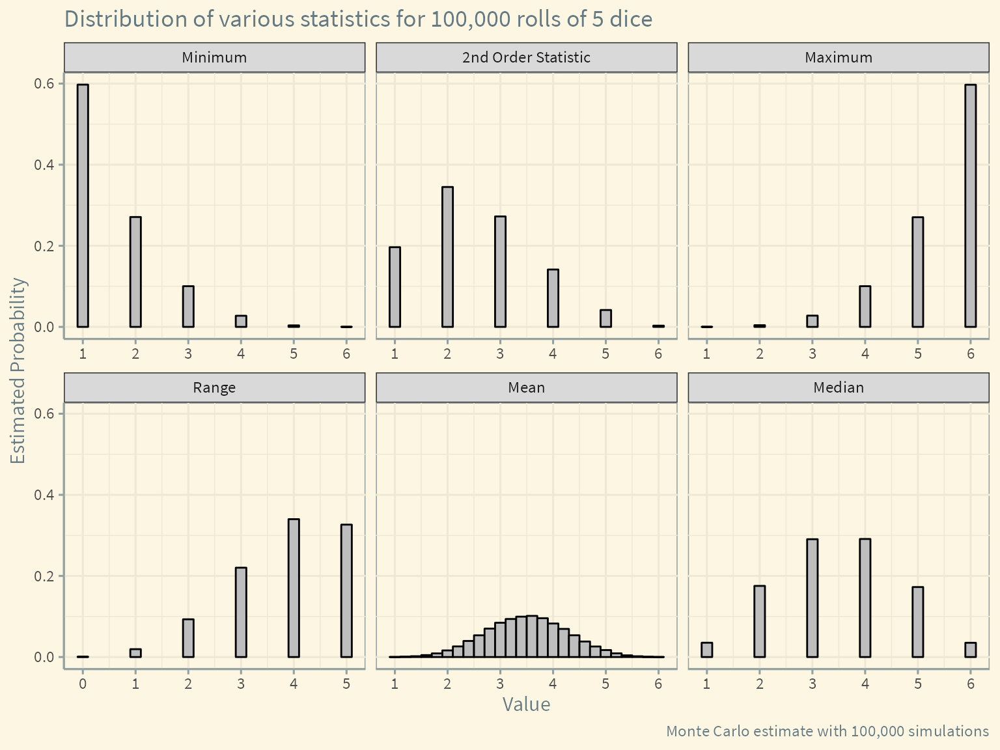

Introduction
When we collect data from a data-generating process, we can calculate values from that data. These values are called statistics.
Common example include:
- mean and median (measures of center)
- variance and IQR (measures of spread)
- order statistics, such as the minimum and the maximum
We can even create arbitrary statistics that appear to have little use, such as adding only the first and third elements of the data and dividing by 17.
Simulating statistics of dice rolls
As a simple data-generating process, let’s consider rolling 5 dice. Each time we roll, we obtain 5 numbers, each from 1 to 6. We will call each one of these vectors of 5 numbers,
\[ (x_1, x_2, x_3, x_4, x_5) \]
a sample. We then will compute statistics from these samples. The main question we seek to answer is: how are the statistics distributed? When I calculate the mean of 5 dice, what will the most likely result be? We can ask this question about any statistic.
We’ll write a function to roll n dice called roll().
Code
# A function to roll `n` dice
roll <- function(n){
sample(x = 1:6, size=n, replace=TRUE)
}Then we’ll use purrr:map() to generate 100,000 rolls of 5 dice.
Code
# Roll 5 dice 100,000 times
data <- map(1:1e5, ~roll(5))Here’s an example of running the function.
Code
# Look at first three rolls
data[1:3][[1]]
[1] 3 1 4 2 5
[[2]]
[1] 5 3 3 1 1
[[3]]
[1] 5 3 3 3 2For each of these rolls, we can calculate the value of a statistic.
We’ll calculate the following statistics:
- median
- mean
- minimum
- maximum
- second order statistic \(X_{(2)}\)
- range
Code
# Returns the nth order statistic of the sample
order_stat <- function(x, n){
x <- sort(x)
return(x[n])
}
# Generate various statistics for each roll
medians <- map_dbl(data, ~median(.x))
means <- map_dbl(data, ~mean(.x))
minimums <- map_dbl(data, ~min(.x))
maximums <- map_dbl(data, ~max(.x))
second_order_stat <- map_dbl(data, ~order_stat(x=.x, n=2))
ranges <- maximums - minimumsCode
# Create a data frame from our computed statistics
df <- tibble(medians, means, minimums, maximums, second_order_stat, ranges)
# Pivot the data into long format for plotting
df <- pivot_longer(df, cols = everything())Now using the data from our simulation, we can plot the sampling distribution of the each of the statistics.
Code
df$name <- recode(df$name,
`medians` = "Median",
`means` = "Mean",
`minimums` = "Minimum",
`maximums` = "Maximum",
`second_order_stat` = "2nd Order Statistic",
`ranges` = "Range")
df$name <- as.factor(df$name)
df$name <- fct_relevel(df$name,
c("Minimum",
"2nd Order Statistic",
"Maximum",
"Range",
"Mean",
"Median"))
df %>%
ggplot(aes(x = value)) +
geom_bar(aes(y = ..prop..),
width = 0.2, fill = "gray", color = "black") +
scale_x_continuous(breaks = 0:6) +
facet_wrap(~name, scales = "free_x") +
labs(x = "Value",
y = "Estimated Probability",
title = "Distribution of various statistics for 100,000 rolls of 5 dice",
caption = "Monte Carlo estimate with 100,000 simulations") +
ggthemes::theme_solarized() +
theme(text = element_text(size = 12, family = "Source Sans Pro"))
A few things to note:
- Because of averaging, the mean can take on more possible values than the other statistics. Qe can see it taking on the characteristic bell shape of the normal distribution due to the central limit theorem.
- The median is always a whole number because we are rolling an odd number of dice.
- Some of these distributions are tedious to work out analytically, and with more complicated data-generating processes there may be no closed form solutions.